library(tidyverse)
library(here)
library(janitor)
library(patchwork)
library(ggrepel)
library(gghighlight)
library(paletteer)
library(ggExtra)
library(ggbeeswarm)
library(gapminder)
library(sf)day8_morning
Morning
Warm-up
# read in data from root and look in this folder for this file
lizards <- read_csv(here("data_tidy", "lizards.csv"))# subset with data only containing western whiptails, colorado checkered, and eastern fence lizards, new column total length in cm, group by species, and site, summary table with mean total length and sd of total length by species and site
lizards_subset <- lizards %>%
filter(common_name %in% c("western whiptail", "colorado checkered", "eastern fence")) %>%
mutate(total_length_cm = total_length / 10) %>%
group_by(common_name, site) %>%
summarise(mean_total_length = mean(total_length_cm), sd_total_length = sd(total_length_cm))Review Basics of GGplot
#scatterplot of lizard weight v length
ggplot(data = lizards, aes(x = total_length, y = weight)) +
geom_point(aes(color = common_name))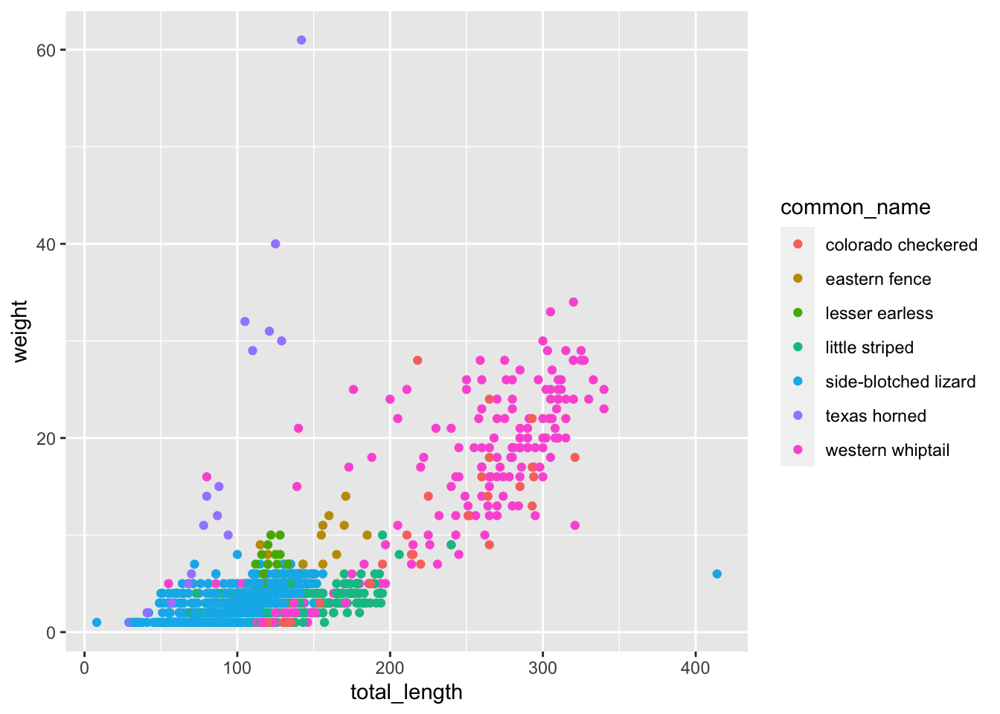
#faceting - split up into separate graphs as a function of "variable" indicated, scales = free says it is okay to have different scales for different values shown
ggplot(data = lizards, aes(x = total_length, y = weight)) +
geom_point(aes(color = common_name)) +
facet_wrap(~ common_name, scales = "free")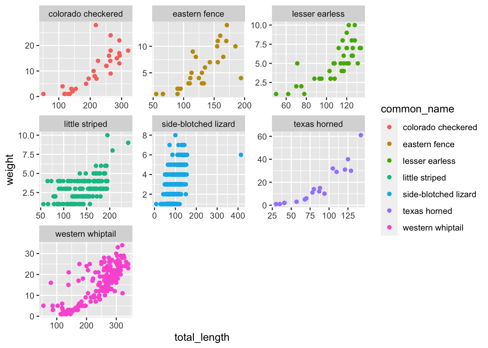
# use dplyr::count to find the total number of lizards by common name in the lizards dataset
lizards_counts <- lizards %>%
count(common_name)
#could also be done as
# group_by(common_name) %>%
# summarize(n = n())# make a column chart of lizards by column name
ggplot(data = lizards_counts, aes(x = common_name, y = n)) +
geom_col()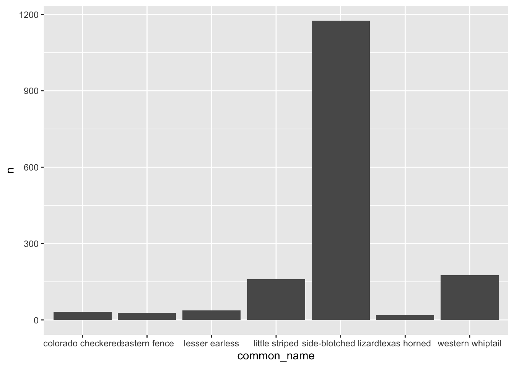
# improve readability when names are long by flipping axes
ggplot(data = lizards_counts, aes(y = common_name, x = n)) +
geom_col()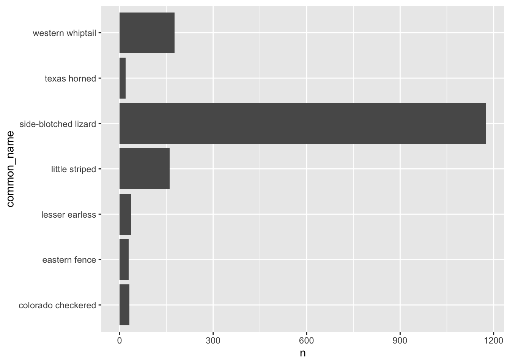
#re-order our columns based on counts through forcats::fct_reorder() which converts the class to factor from character and then orders based on a variable, ggplot will always go alphabetically
ggplot(data = lizards_counts, aes(y = fct_reorder(common_name, n), x = n)) +
geom_col()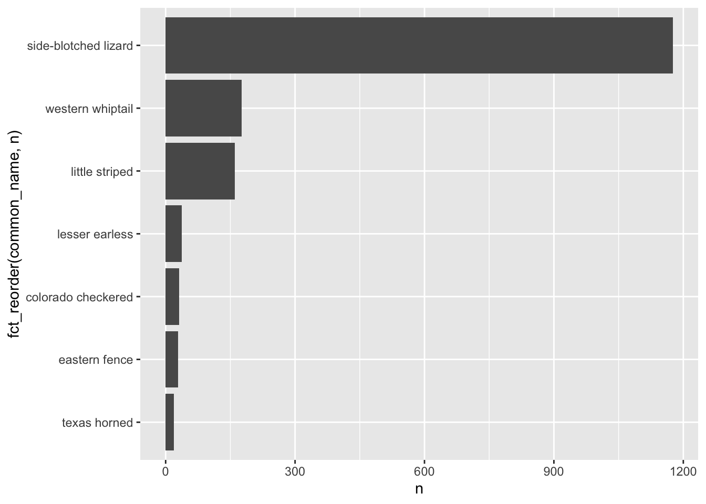
#scales - adjusting the limits of the scale on the y-axis from 0 to 100, breaks only at 20 and 80
ggplot(data = lizards, aes(x = total_length, y = weight)) +
geom_point(aes(color = common_name)) +
scale_y_continuous(limits = c(0, 100),
breaks = c(20, 80)) 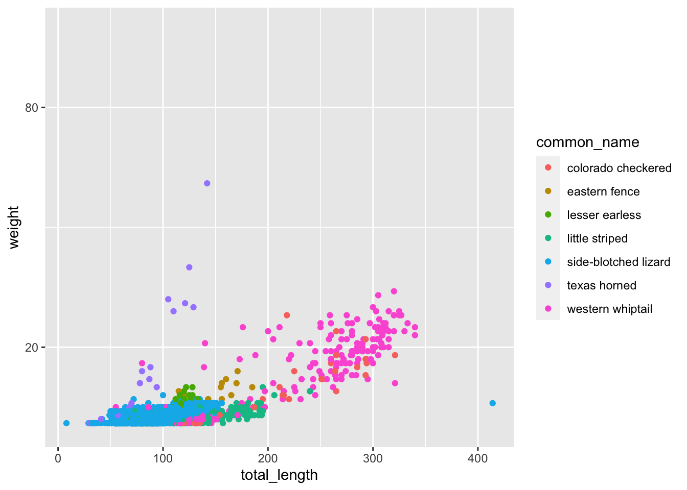
#scales - adjusting the limits of the scale on the y-axis from 0 to 100, breaks along a seq from 0 to 100 by 20 increments
ggplot(data = lizards, aes(x = total_length, y = weight)) +
geom_point(aes(color = common_name)) +
scale_y_continuous(limits = c(0, 100),
breaks = seq(from = 0, to = 100, by = 20)) # scale to change colors and gradients of colors
ggplot(data = lizards, aes(x = total_length, y = weight, color = weight)) +
geom_point() +
scale_y_continuous(limits = c(0, 100),
breaks = seq(from = 0, to = 100, by = 20)) +
scale_color_gradient(low = "red", high = "navy")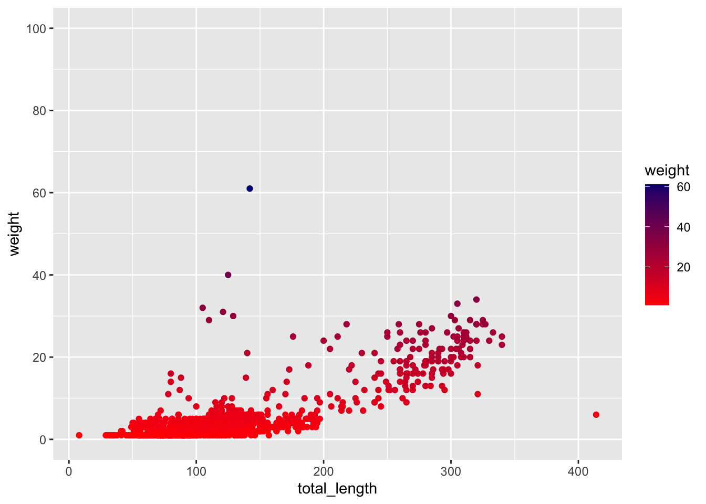
Afternoon
#annotate is to add something and indicate where this is to exist based on scale present
ggplot(data = gapminder, aes(x = lifeExp, y = gdpPercap)) +
geom_point() +
annotate("text", x = 40, y = 90000, label = "A label")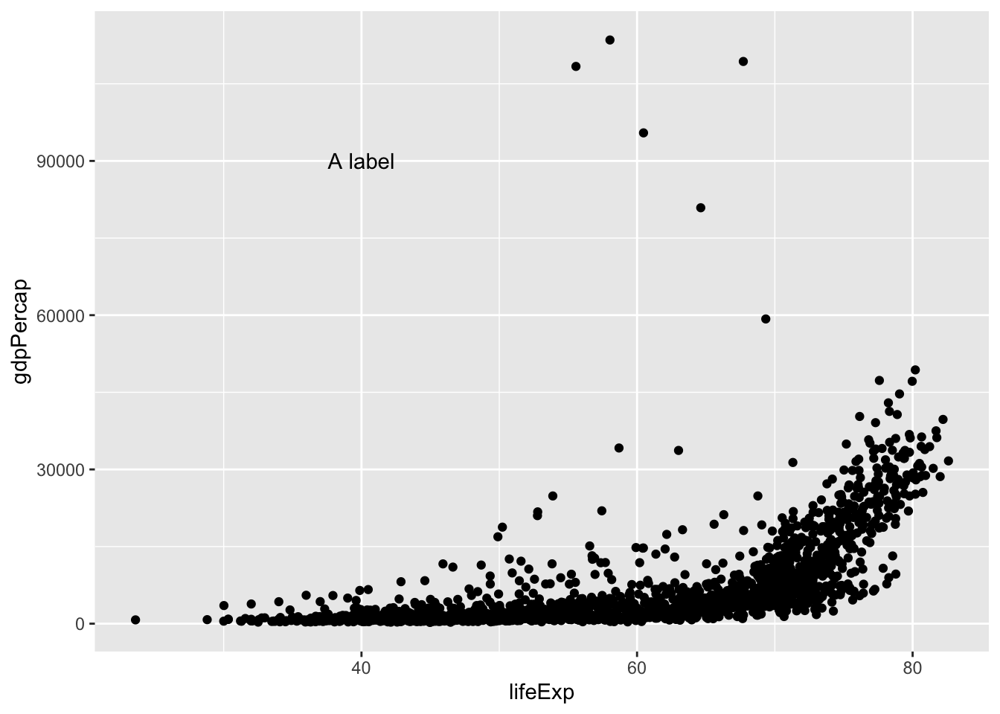
# add a horizontal line at y = 70,000
ggplot(data = gapminder, aes(x = lifeExp, y = gdpPercap)) +
geom_point() +
annotate("text", x = 40, y = 90000, label = "A label") +
geom_hline(yintercept = 70000, linetype = "dotted", color = "purple")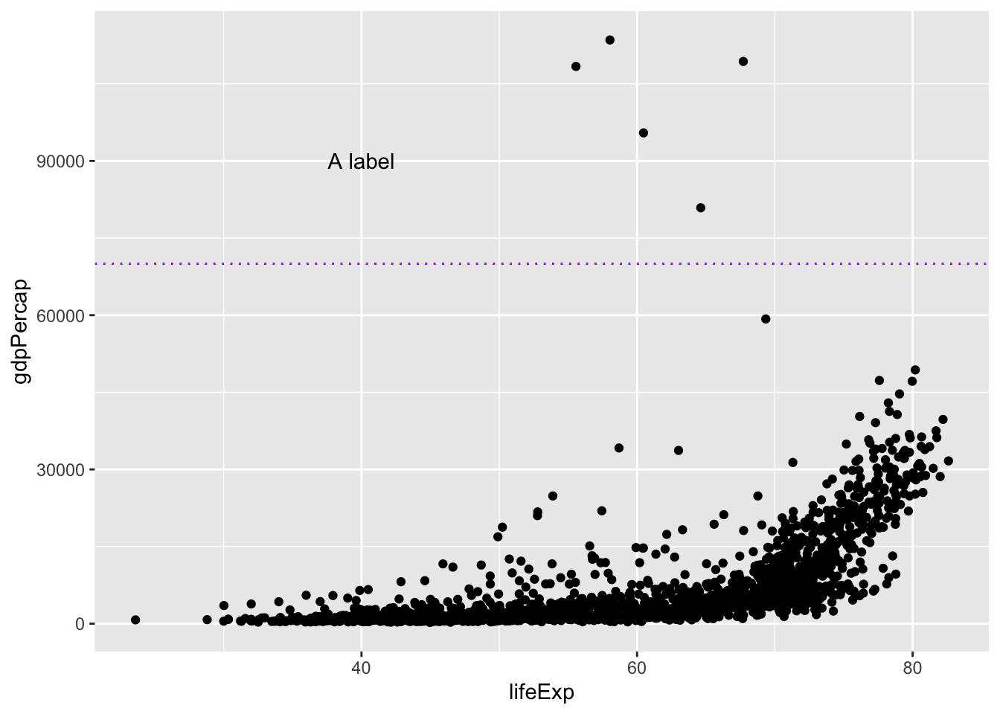
# add a vertical line for the mean life expectancy
ggplot(data = gapminder, aes(x = lifeExp, y = gdpPercap)) +
geom_point() +
annotate("text", x = 40, y = 90000, label = "A label") +
geom_hline(yintercept = 70000, linetype = "dotted", color = "purple") +
geom_vline(xintercept = mean(gapminder$lifeExp), color = "red")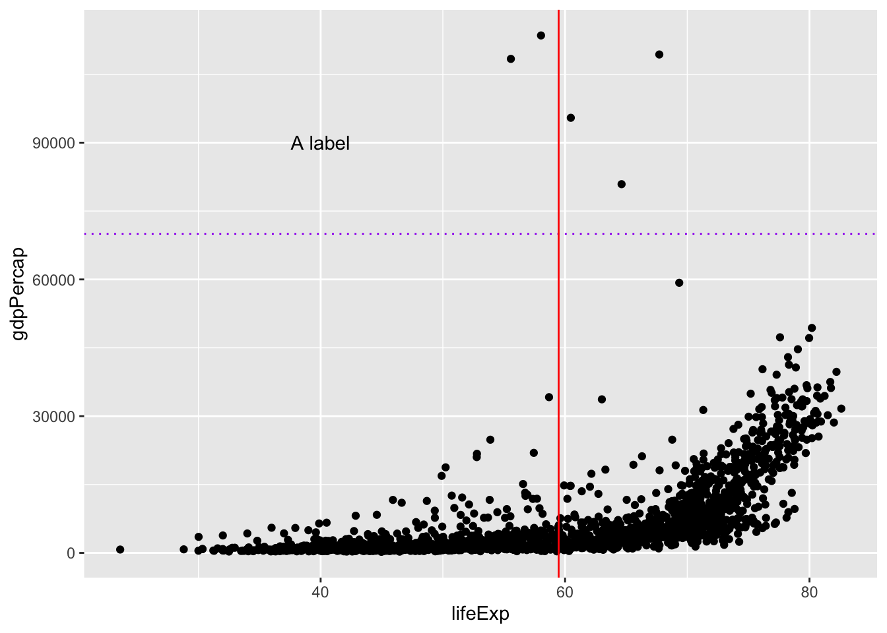
#ggrepel where the labels for points lie
gapminder %>%
filter(continent == "Europe", year == 2002) %>%
ggplot(aes(x = gdpPercap, y = lifeExp)) +
geom_point(shape = 23, size = 4, color = "pink", fill = "blue") +
geom_text_repel(aes(label = country)) 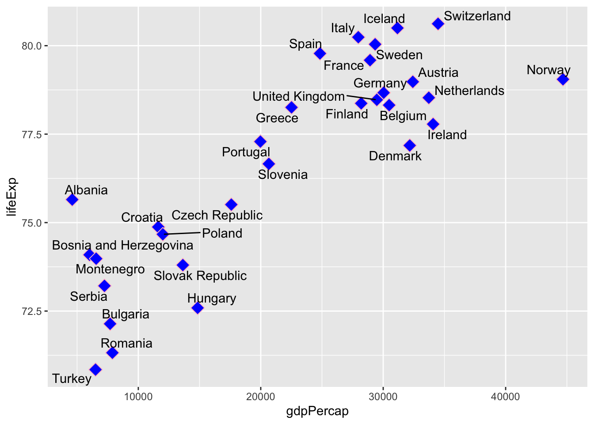
#highlight observations where country is Poland
gapminder %>%
filter(continent == "Europe", year == 2002) %>%
ggplot(aes(x = gdpPercap, y = lifeExp)) +
geom_point() +
gghighlight(country == "Poland", label_key = country)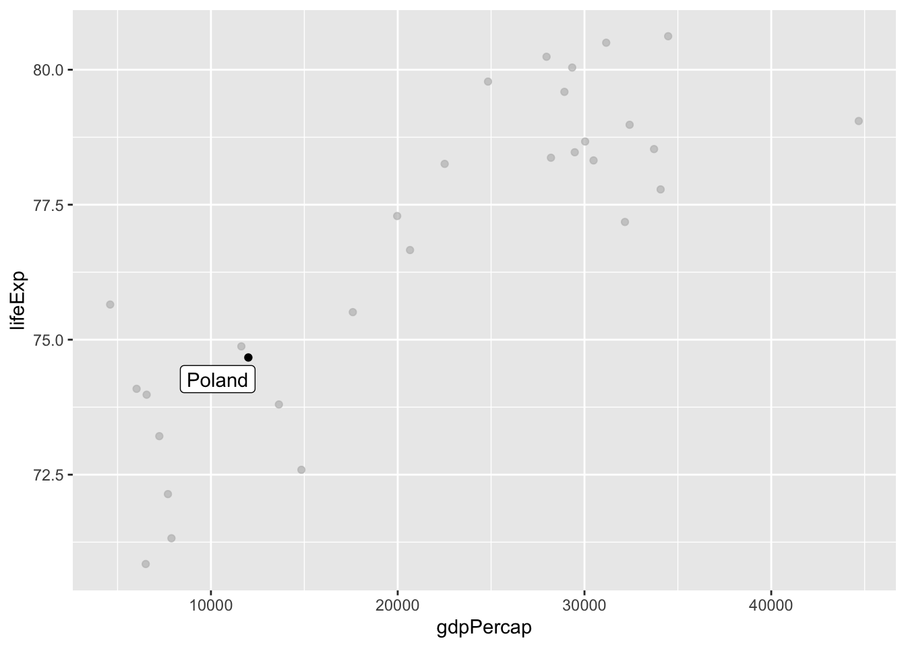
# ggplot from 2007, then highlight all countries in Europe, and label by country
gapminder %>%
filter( year == 2007) %>%
ggplot(aes(x = gdpPercap, y = lifeExp)) +
geom_point() +
gghighlight(continent == "Europe", label_key = country) +
geom_text_repel(aes(label = country))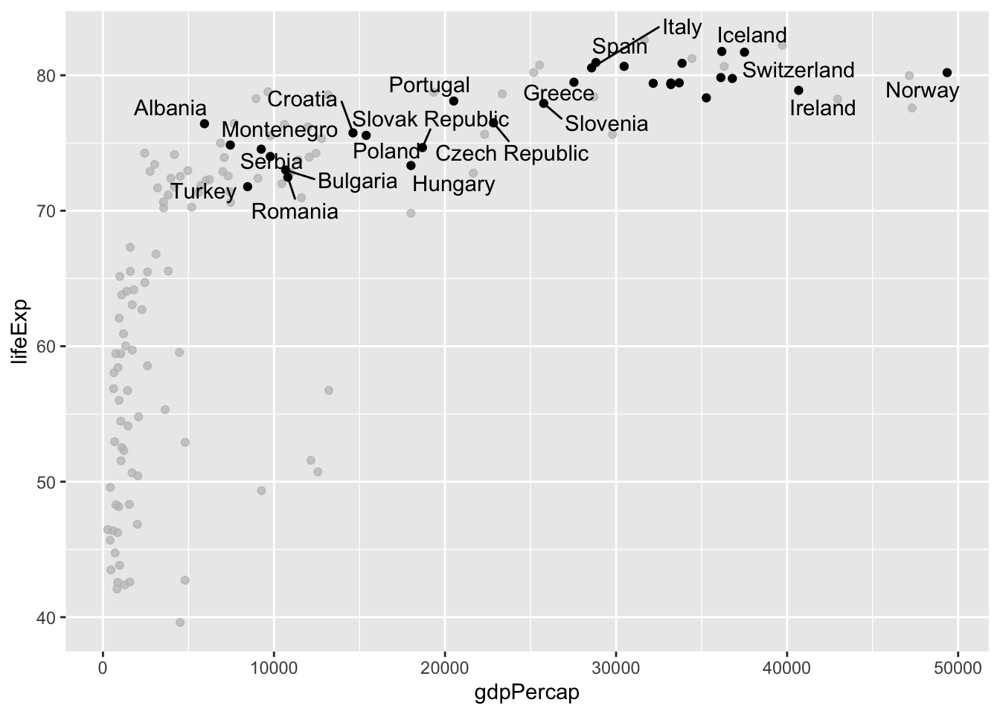
# read in spatial data = 2 attributes and polygon using sf package
# only keep name column and rename, sf is sticky so geometry remains even though you only told it to keep name
jornada_veg <- read_sf(here("data_raw", "spatial_vegetation", "doc.kml")) %>%
select(name = Name)
#make a map, fill of polygon color is by name, and no color border
ggplot() +
geom_sf(data = jornada_veg, aes(fill = name), color = NA) +
theme_minimal()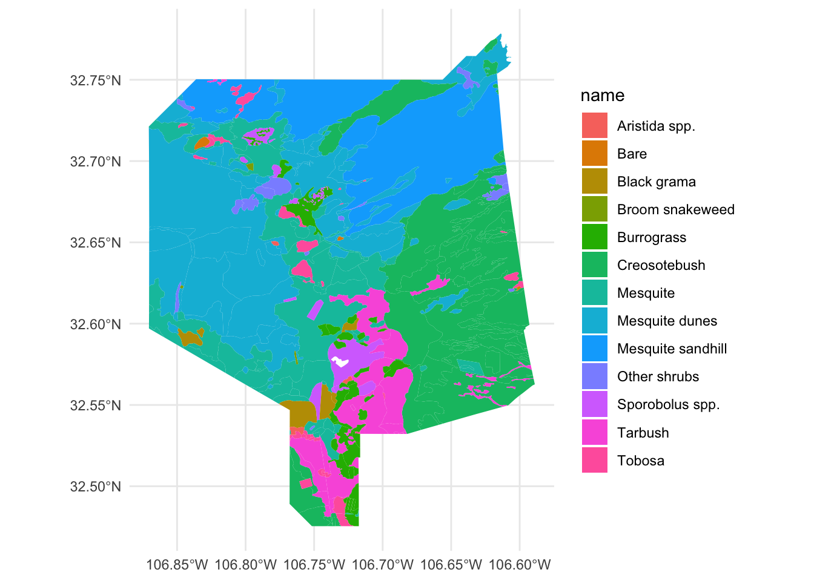
#use paleteer color pallet on discrete data
ggplot() +
geom_sf(data = jornada_veg, aes(fill = name), color = NA) +
theme_minimal() +
scale_fill_paletteer_d(palette = "ggthemes::manyeys")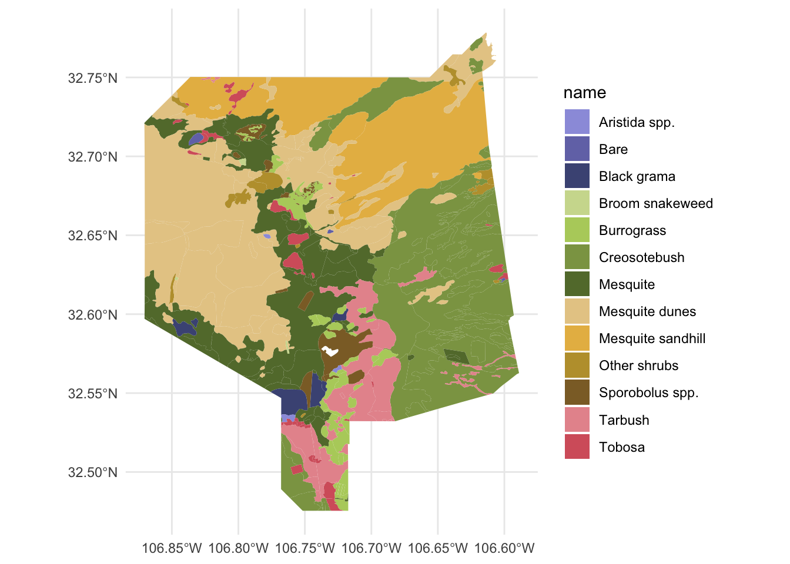
#alter theme elements through theme and make to specify the type of element you are altering
ggplot() +
geom_sf(data = jornada_veg, aes(fill = name), color = NA) +
theme_minimal() +
scale_fill_paletteer_d(palette = "ggthemes::manyeys") +
theme(panel.background = element_rect(color = "purple", size = 5, fill = "pink"),
plot.background = element_rect(fill = "lightblue"),
panel.grid = element_line(color = "green", size = 2),
axis.text.x = element_text(color = "blue", size = 14))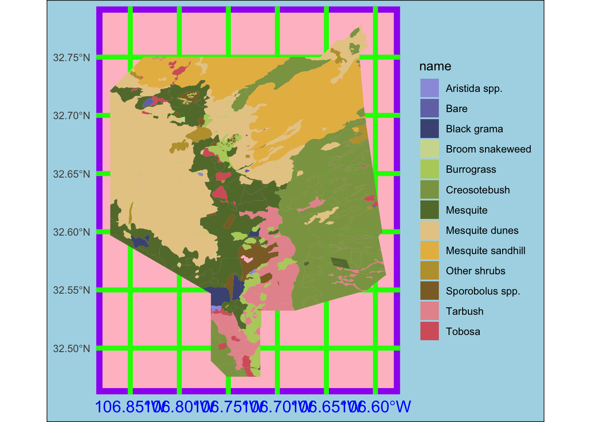